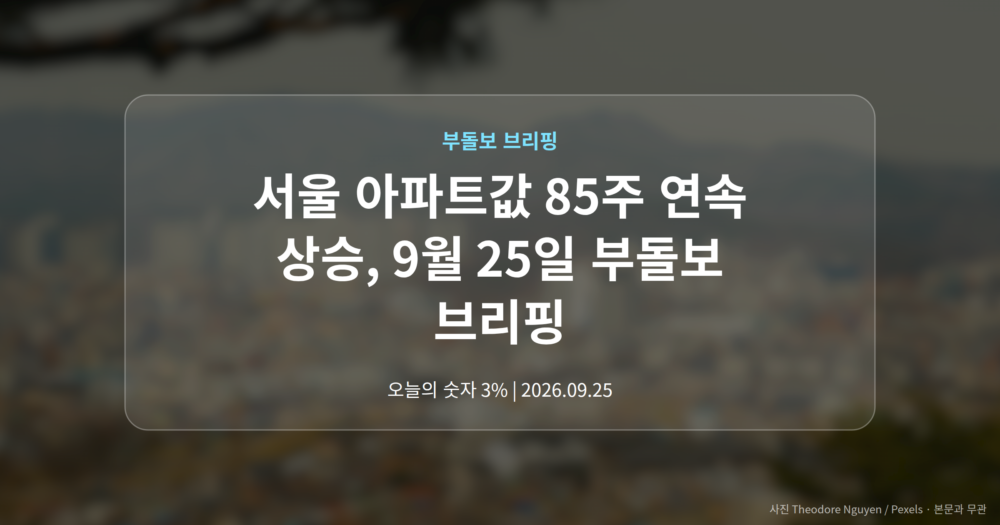
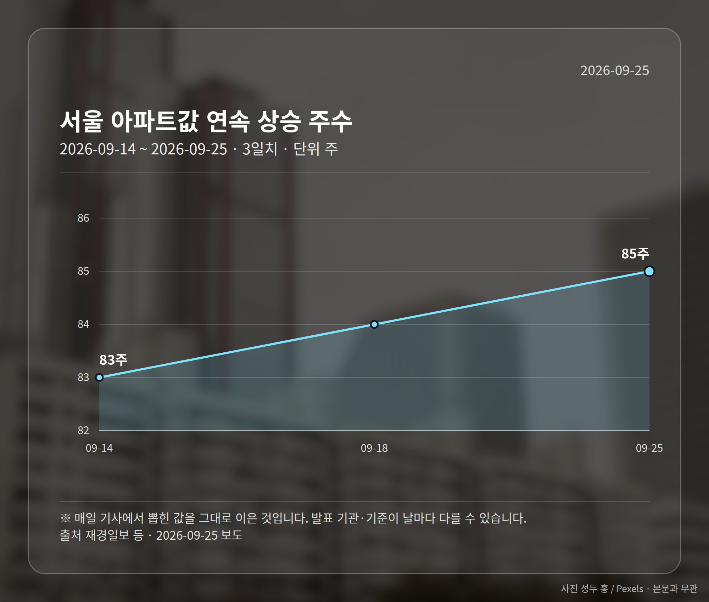
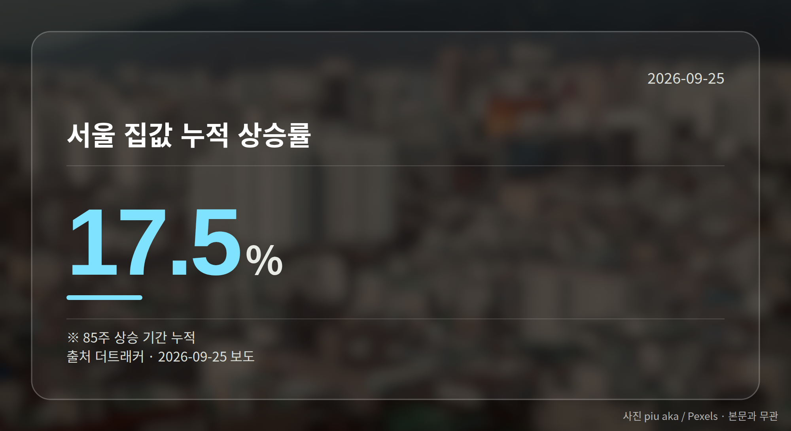
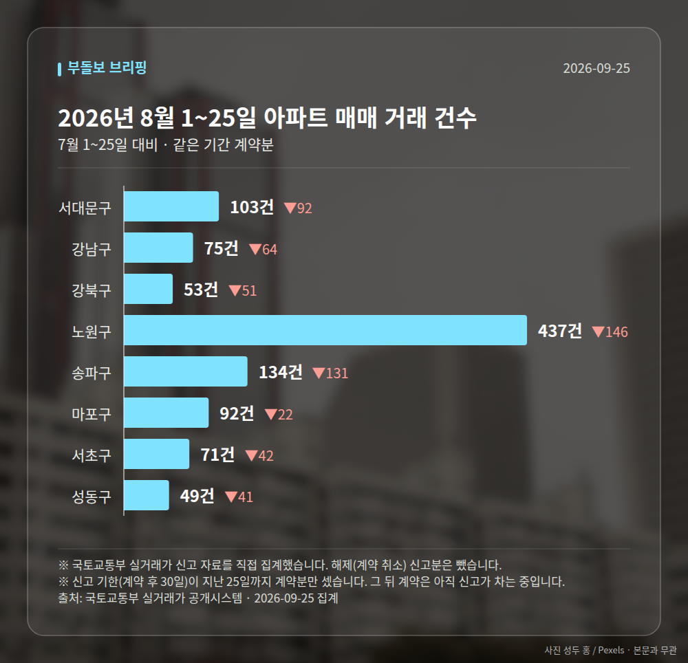

이 글은 2026년 9월 25일 기준으로 정리한 내용입니다. 실거래 거래 건수는 2026년 8월 1~25일 계약분(신고 기한이 지난 것), 전세가율 등은 2026년 7월 신고분입니다.
서울 아파트값 85주 연속 상승이라는 소식이 9월 25일 26개 매체에서 동시에 보도됐습니다. 문재인 정부 시절 세워진 역대 최장 상승 기록과 동률입니다.
다만 숫자 하나만 보고 판단하기엔 이른 구석이 있습니다. 같은 날 보도에서도 집계 주수가 엇갈렸고, 서울 안에서도 방향이 갈렸기 때문입니다.

재경일보 등은 9월 24일 기준 서울 아파트 매매가격이 85주째 올랐다고 전했습니다. 일부 매체는 이 최장 기록이 세워진 시점을 2020년으로 특정했습니다.
여기에 더트래커는 금리 3%, 대출 규제 국면에서도 이 기간 누적 상승률이 17.5%에 달한다고 보도했습니다. 뉴시스는 문정부 때의 2배라고 표현했습니다.
| 항목 | 수치 | 출처 |
|---|---|---|
| 연속 상승 주수 | 85주 | 재경일보 등 |
| 다른 집계 주수 | 88주 | edaily |
| 누적 상승률 | 17.5% | 더트래커 |
| 문정부 대비 | 2배 | 뉴시스 |
주의할 점이 있습니다. edaily는 집계 기준에 따라 88주와 85주로 다르게 나타난다고 짚었는데, 어떤 기준 차이인지는 자료에 나와 있지 않습니다.

newskr.kr은 강남3구가 하락했는데도 서울 전체는 85주째 상승했다고 보도했습니다. JTBC는 '강남 불패'가 흔들리자 강북이 들썩인다고 전했습니다.
ppss.kr도 서울 평균을 기준으로 강남과 강북이 갈라졌다고 봤습니다. 다만 각각의 하락폭·상승폭 수치는 제시되지 않았습니다.
그래서 '서울 평균'이라는 말이 여러분 동네 체감과 다를 수 있습니다. 평균 아래에서 방향이 반대로 움직이는 구간이 있기 때문입니다.
머니투데이는 '전세 살 바엔 집 살래'라는 심리로 외곽에서 '생존 매수'가 나타나고 있다고 보도했습니다. DSR(소득 대비 갚아야 할 원리금 비율로 대출 한도를 정하는 규제)이 조여진 상황에서도 매수세가 이어졌다는 설명입니다.
다만 그 규모나 구체적 지역, 거래량 수치는 자료에 담기지 않았습니다. 보도된 해석의 방향만 참고하시는 편이 안전합니다.
서울 8개 구에서 계약된 매매는 1014건입니다. 7월 1~25일 1603건과 견주면 -589건입니다.
거래가 많은 곳: 서대문구 103건(-92) · 강남구 75건(-64) · 강북구 53건(-51)
신고 기한(계약 후 30일)이 지난 25일까지 계약분끼리 견줬습니다.
서대문구 전세가율(전세 보증금 ÷ 매매가)은 가운뎃값 50.4%입니다. 같은 단지·같은 면적 48곳을 견줬습니다.
서울 25개 구 가운데 거래가 가장 크게 움직인 곳: 중랑구 -74.4%(457→117건, 7월 1~25일엔 묵동에 67.6% 몰렸음) · 영등포구 -56.0%(218→96건)
2026년 8~9월 계약 신고가

→ 그림 파일 img-stats-volume.png 을 이 자리에 올리세요
국토교통부 실거래가 신고 자료를 직접 집계했습니다. 해제(계약 취소) 신고분은 뺐습니다.
여러분이 보고 계신 지역은 이 상승세 안에 있나요, 아니면 바깥에 있나요?
댓글로 알려 주시면 다음 글에 반영하겠습니다.